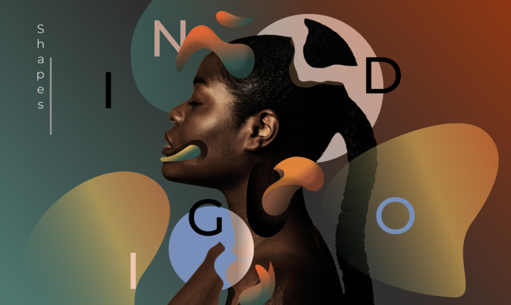
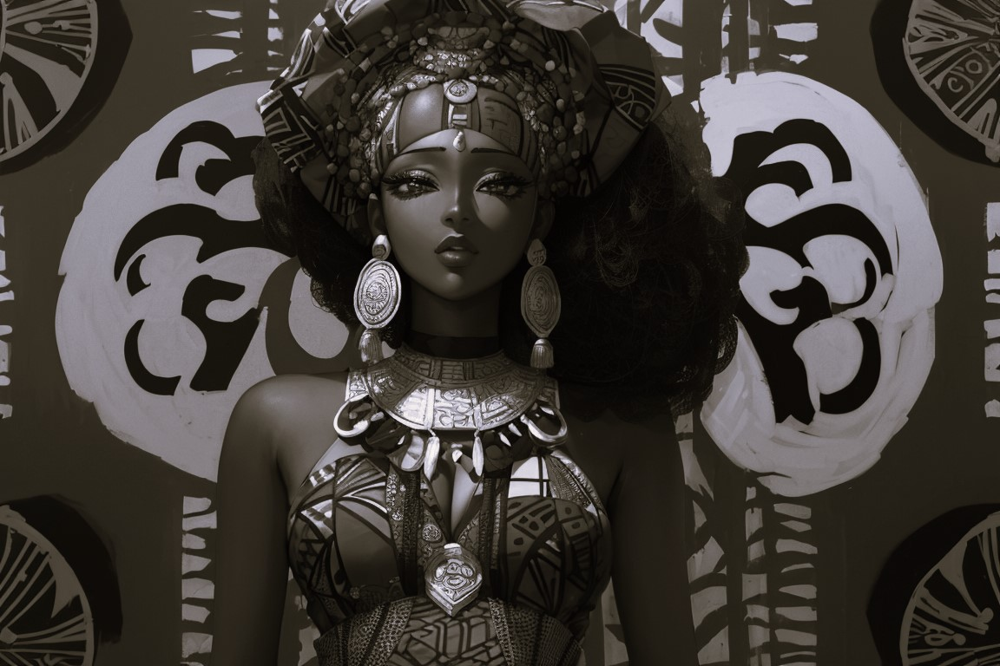

- Content creation
- Well vessed in VB.Net
- Entry level C+ programming language
- Minimul understanding of the Critical Path Analysis
- I can create Webpages with HTML
Content Creation
At MATT-CORP, we believe art transcends boundaries, sparks conversation, and evokes emotions. We aim to be a hub where art enthusiasts, collectors, and artists converge to explore, appreciate, and celebrate the power of creativity.
This video aims to capture the essence of the influencer house, highlighting its community, amenities, success stories, and the collaborative environment it offers to influencers.
Coding
Graphic Design, Web Development and Web Management
Coding is an essential skill that drives innovation, facilitates problem-solving, and enables the creation of solutions across various departments within a company. It's not solely confined to the engineering team but permeates throughout the organization's functions, playing a pivotal role in its success and evolution.
- Product Development: Our Engineers and developers write code to create software, applications, or digital products. They collaborate to design, build, and maintain these products, ensuring they meet user needs and company objectives.
- Innovation and Research: Our Coding is integral to experimenting with new technologies and conducting research. Whilst our Engineers often prototype new ideas, explore cutting-edge technologies, and develop proof-of-concepts using code.
- Quality Assurance: Our Testers and quality assurance professionals write code to create automated tests that validate software functionality. This helps in ensuring the reliability and robustness of the products before they reach users.
- Data Analysis and Insights: Analysts and data scientists utilize code to process, analyze, and derive insights from vast datasets. They develop algorithms, machine learning models, and statistical analyses to extract valuable information that drives decision-making.
Graphic design involves creating visual content to communicate messages. It encompasses various elements such as typography, colors and images.
Art
Paint and Sketching.>
 At MATT-CORP, we are passionate about cultivating a vibrant artistic culture and connecting individuals with captivating works of art. Our mission is to foster a community that celebrates creativity in all its forms.
We specialize in aspects such as painting, sculpture and digital art. and curate an exclusive collection of unique, thought-provoking pieces crafted by talented artists from around the world.
Our services extend beyond showcasing art. We offer:
- Art Acquisition and Sales: Whether you're an art enthusiast, collector, or seeking that perfect piece for your space, we provide personalized guidance to help you discover art that resonates with your vision
- Education and Workshops: We believe in nurturing budding artists. Our workshops and educational programs cater to aspiring creators, providing them with the tools and knowledge to refine their craft.
- Art Curation and Exhibition: Collaborating with galleries and institutions, we curate exhibitions that showcase diverse artistic expressions, fostering dialogues and appreciation for various art forms.
- Art Restoration and Preservation: Our commitment to preserving the beauty of art extends to restoration services, ensuring artworks retain their splendor for generations to come. Join us on this artistic journey as we continue to inspire, innovate, and create.